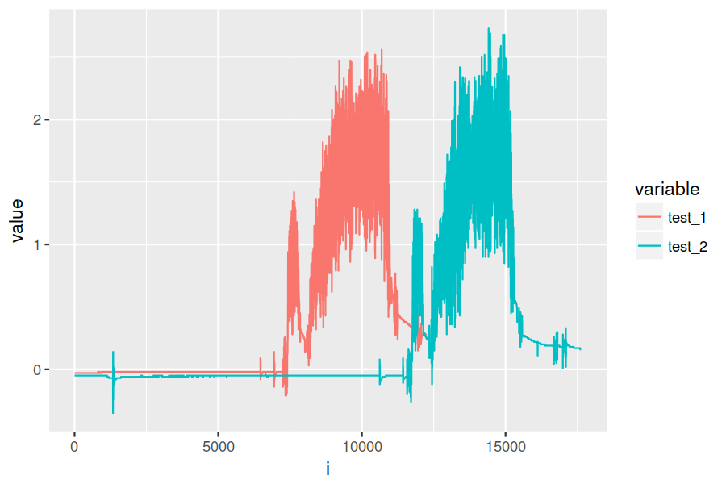
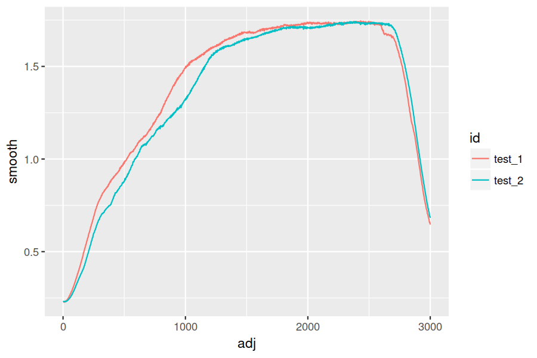
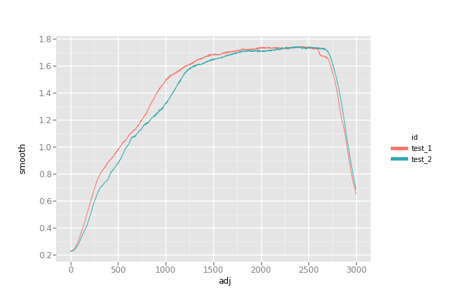

Translating R to python
Background
I've been using R for at least 5 years. Lately, I've been trying to pick up python as
well, which is quite the learning experience! I've been through some tutorials (or pieces
of them) from think python and lpthw, as well as classes on Coursera. With some basics
under my belt, I started getting into numpy and pandas, which is where things got
tricky. I can vaguely recall a time in my R Padawan days when I had a sense of what I
wanted to do, but didn't know enough to even formulate the question correctly. I also find
I don't learn well by just reading docs. I want to poke and prod around, trying to wrap my
head around what I'm reading. For example, I ran across the the function tolist() via
SO, but have no idea how to interpret this as it is:
Series.tolist() Convert Series to a nested list
I thought a pd.Series was just like an R vector; why would it be "nestable" in the
first place? What is a nested list and why do I want that? Some examples just show that it
converts from a pd.Series to a list. I don't see any "nesting," but then don't know what
that is.
In any case, the point is that instead of trying to just learn pandas in some linear
way, I thought it might be more effective to simply take some R code and translate it to
python. I know what I want to know and the tools I would use in R, so getting my brain
around how to do the same in python seemed like an interesting way to learn. Whatever I
pickup will be relevant (I'm already doing these sorts of tasks), and the learning is more
targetted (I'm extracting the small % of information I need vs. trying to digest things I
likely will never use).
The challenge
The data consists of some raw test data from a sensor. I've anonymized what it is, but the gist is as follows:
- I start logging data via USB at 1000 Hz
- The test begins and I get the data of interest
- I stop logging that sample
Because the logging software and machine don't communicate, I end up with varying amounts of baseline, nominally zero data before the test occurs. Once it's over, I have a "tail" of unknown length after the test is complete. I tend to have anywhere between 5-25 tests, and I want to align their starts for plotting/analysis. I've created a sample dataset here if you want to follow along.
Using R
So you can get a sense of how I'm doing this in R (comments/improvements welcome!),
let's look at the raw data. i here is just the row number, but because of the sampling
rate it's also the time in milliseconds.
library(ggplot2)
library(reshape2)
data <- read.csv("https://jwhendy.github.io/data/r-to-python-data.csv")
head(data)
i test_1 test_2 1 1 -0.03 -0.05 2 2 -0.03 -0.05 3 3 -0.03 -0.05 4 4 -0.03 -0.05 5 5 -0.03 -0.05 6 6 -0.03 -0.05
If we plot it, you can see the lag I'm talking about:
data_melt <- melt(data, id.vars = "i")
ggplot(data_melt, aes(x = i, y = value, colour = variable)) + geom_line()

After the lag, the machine does a little bit of warmup/prep which is that first mini-peak. Then there's a brief pause and the test is run. The "start" of each test is the point right after the pause, and that's what I want to align to.
For my python challenge, I'll be trying to create an analog of this:
## here I apply a moving average to smooth the data
## source: https://stackoverflow.com/questions/743812
ma <- function(x, n){stats::filter(x, rep(1/n, n), sides=2)}
## this is a modified form of the function I use to align the data
adjuster <- function(vals) {
## find the baseline value and add 0.1 to create a "trigger" level
baseline <- mean(vals[1:20]) + 0.1
## what's the index of the first value above our trigger?
base <- which(vals > baseline)[1]
## find the mini-peak, which occurs within 500ms of the initial rise
peak <- which.max(vals[base:(base + 500)])
## find the trough afterward, which signals the actual test start
valley <- which.min(vals[(base + peak):(base + peak + 600)])
## add up our cumulative indices
start <- base + peak + valley
## I manually examined a couple data points at this setting and found
## the test to last ~3000ms
end <- start + 3000
## I want to ditch the lag/warm up, keep the test itself, and ditch the
## logging of nothing once the test completes. To do this, I send back:
## - NAs from 0 to the start index
## - a new, shifted index matching the start and end of the test
## - NAs until the end
adj <- c(rep(NA, start),
1:(end - start),
rep(NA, (length(vals) - end)))
return(adj)
}
## this is likely overkill for 2 columns, but lapply is typically
## how I go about processing columns through some function, creating
## data frames, and then re-assembling into a big dataframe afterward
data_list <- lapply(2:ncol(data), function(i) {
## create a dataframe to hold the raw force and an id for this data
n <- length(data[, i])
temp <- data.frame(id = rep(names(data)[i], n),
raw = data[, i])
## run the raw force through the ma() function to smooth
## dump the NAs returned
temp$smooth <- ma(temp$raw, 250)
temp <- temp[!is.na(temp$smooth), ]
## run the smoothed force through our adjuster function
## purge the returned NAs
temp$adj <- adjuster(temp$smooth)
temp <- temp[!is.na(temp$adj), ]
return(temp)
})
## lastly, I put the data into long form by "stacking it" using rbind
data_all <- do.call(rbind, data_list)
ggplot(data_all, aes(x = adj, y = smooth, colour = id)) + geom_line()

The translation
Moving average
I just went line by line trying to re-create what I wanted. I'll start with the moving
average, ma() function. When I googles "moving average in R" some years ago, I got the
one-liner above pretty easily. Search for that in python and you get suggestions using,
among others:
np.convolve()np.cumsum()-
pd.rolling_mean, which is nowpd.rolling().mean() - enumerating over a manually created list
I ended up liking pd.rolling, so my new function is:
def ma(col, n=250):
"""take in a df column and return a moving average smoothed one"""
res = col.rolling(center=True, window=n).mean()
return res
Adjusting
The adjuster() function was much more difficult. Along the way, I ran into a bunch of
other things I had to get up to speed on.
- how do I generate some test data so I'm not running tests on 10k values?
- what's the equivalent to
which()inR? - how do I do something like
rep()? - how about
rbind()? -
pandassubsets by conditionals, but what do I use foris.na? -
loc,iloc,at,iat, andix, oh my! -
np.arange(),np.linspace(),np.random.random_sample()
That's just a few examples, but I'm highlighting to show that just having to figure things out was sooo much more effective than my previous reading of tutorials and intros! Here's what I ended up with:
def adjuster(col):
"""takes col, identifies beginning/end of a peel test, returns trimed df"""
baseline = col[0:20].mean() + 0.1
base = min(col[col > baseline].index)
peak = col.loc[base:base+500].idxmax()
valley = col.loc[peak:peak + 600].idxmin()
start = valley
res = pd.Series( np.repeat(None, start).tolist()
+ np.arange(0, 3000).tolist()
+ np.repeat(None, len(col) - start - 3000).tolist())
return res
Quasi lapply()
Next, to cycle through my columns to run them through ma() and adjuster():
data = pd.read_csv('https://jwhendy.github.io/data/r-to-python-data.csv')
data_list = list()
## this iterator is ripe for being more elegant
for i in [1, 2]:
temp = pd.DataFrame({'id' : data.columns[i],
'raw' : data.iloc[:, i]})
## smooth out, drop null results and then reindex
## I learned the hard way what pandas does when adding a column
## to an existing df when the indices don't match!
temp['smooth'] = ma(temp['raw'])
temp = temp[temp['smooth'].notnull()]
temp = temp.reset_index(drop=True)
## send to function to get what I want, purge the rest
temp['adj'] = adjuster(temp['smooth'])
temp = temp[temp['adj'].notnull()]
## add it to a list of dfs
data_list.append(temp)
## use this like do.call(rbind, data_list) with R
data_all = pd.concat(data_list)
The result
I'd call this a success!
from ggplot import *
p = ggplot(data_all, aes(x = 'adj', y = 'smooth', color = 'id')) + geom_line()
p.save('../aligned_py.png', width=9, height=6, dpi=600)

A gotcha: indices in pandas
I can't even stress how confused I was when my whole plot was shifted vs. the R
result. It took me a long time to realize that even though I thought I got loc
vs. iloc, I was still bitten by how pandas merges data frames/series with non-matching
indices.
I'm used to entirely position-based indexing (i.e. vals[i] means the ith thing in the
vector), whereas pandas appears to default to index. I even thought I accounted for this
by finding my index-based points, but as a final step doing:
## above it's just: start = valley start = col.index.get_loc(valley)
I got bitten by this combo:
- when I take my temp data frame and run the moving average, I get
1/2 * windowNaNvalues at the beginning/end (so, 125 on each side) - when I purge these by subsetting with
notnull(), I lose my starting 0 index; it now starts at 125 - the above code, indeed, gave me the positional location, but I use that value to create
a new
pd.Series, which gets an index starting at 0 - when I add the new data (0 indexed) to the existing data frame (starts at 125), everything ends up shifted
If you already know pandas this is trivial for you, but this gets the point across to
those who are new like me!
s1 = pd.Series(1, index = np.arange(0, 4))
s2 = pd.Series(2, index = np.arange(2, 6))
pd.DataFrame({'s1' : s1, 's2' : s2})
s1 s2
0 1.0 NaN
1 1.0 NaN
2 1.0 2.0
3 1.0 2.0
4 NaN 2.0
5 NaN 2.0
I wouldn't in a million years have guessed this would be the behavior. Boy that was a head scratcher!
Takeaway
Most of this was relatively straightforward, granted it still required a lot of
digging. To conclude, this was immensely helpful. It seems like I should have figured this out a
long time ago: take something you know how to do and do it in the new language. I got a
lot of practice with python, beefed up some general knowledge of how to even discuss
python terminology, did something that's transferable to future work like this, and
overall just feel good :)